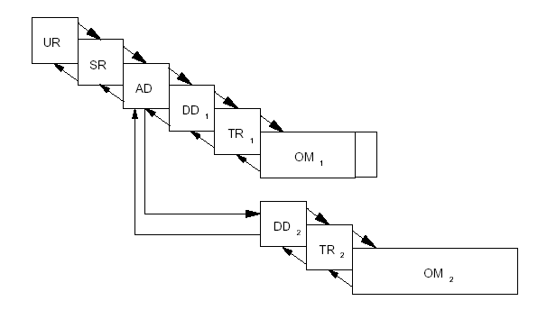

Quality Assurance Plan
Release Information
| Project | Siconos |
|---|---|
| Internal Release Number: | 0.0 |
| Attached Worksheets: |
QA plan > Quality Report
|
| Related Documents: |
ESA software engineering standards
|
Introduction
The purpose of the quality assurance plan is to check that the project is consistent with standards and plans which are defined below. As it is recommended by the ESA software engineering standards to small software projects, the Quality Plan combines the following documents for small projects :
- The software Project Management Plan.
- The software Configuration Management Plan.
- The software Verification and Validation Plan.
- "Guide to applying the ESA software engineering standards to small software projects. ", BSSC(96)2, esa 1996,
- "Guide to the software project management ", PSS-05-08, esa 1995,
- "Guide to the software configuration management", PSS-05-09, esa 1995,
- "Guide to the software verification and validation", PSS-05-10, esa 1995,
- "Guide to the software quality assurance", PSS-05-11, esa 1995,
Project Management Plan
Introduction
Software project management is 'the process of planning, organizing, staffing, monitoring, controlling and leading a software project'. This part is based on the ESA ``guide to the software project management'', PSS-05-08, esa 1995.This part defines the project management plan of the siconos platform. The project organization and the major features of the technical process are defined. Finally, a work breakdown structure, a schedule with milestones and the roles and responsibilities are provided.
Actually, only the project management plan, and the technical process for Siconos/Kernel and Siconos/Numerics are detailed.
For the more elaborate part of the platform, which are
Siconos/Analysis, Siconos/Control and Siconos/IMSE, separated documents
will be provided.
Project Organization
Organizational roles and responsibilities
Due to the number of participants in the software project
development,
the organization of the project is relatively simple. The Work Package
2 (Numerical Methods and Software development) is led by Vincent ACARY
(C01), which is also the project manager of the software design and
development.
The teams for the design and the development are defined as follows :
- Team INRIA (C01):
- Vincent Acary (VA) (Team Leader, designer, programmer) Vincent.Acary@inrialpes.fr
- Roger Pissard-Gibollet (RPG) (Software quality leader)
- Franck Pérignon (FP) (programmer, test engineer , numerical algorithms)
- Jean-Baptiste Charlety (JBC) (programmer, test engineer , software librarian) (01/2004 to 04/2005)
- Jean-Michel Barbier (JMB) (programmer, test engineer, software librarian) (01/2004 to 09/2004)
- Team LMGC (AC2):
- Frédéric Dubois (FD) (Team Leader, designer, programmer)
- Shéherazade Nineb (SN) (programmer)
- Jean-Michel Barbier (JMB) (programmer, test engineer, software librarian)(10/2004 to 04/2005)
- Team Analysis (CR6,CR4,CR9,AC5,CR7,AC12,CR8),
- Key Developpers
- Gustavo Osorio (GA) gosorio@unina.it
- Ivan Merillas (IM) merillas@mat.upc.edu
- Petri Piiroinen (PP) petri.piiroinen@bristol.ac.uk
- Developpers
- Fabiola angulo (FA) fangulo@nevado.manizales.unal.edu.co
- Alan Champneys (AR) a.r.champneys@bristol.ac.uk
- Enric Fossas (EF) enric.fossas@upc.edu
- Gino Ianelli (GI) luigi.iannelli@unisannio.it
- Arne Nordmark (AN) nordmark@mech.kth.se
- Gerard Olivar (GO) gerard@mat.upc.edu
- Testing Team
- Mario Di Bernardo (MdB) m.dibernardo@bristol.ac.uk
- Kanat Camlibel (KC) k.camlibel@uvt.nl
- Ugo Galvenetto (UG) u.galvanetto@imperial.ac.uk
- Stefania Santini (SS) stsantini@unina.it
- David Wagg (DW) david.wagg@bristol.ac.uk
- Nathan van der Vouw (NW) n.v.d.wouw@tue.nl
- Team "Control", tbd
- Team imse, tbd
The roles and responsibilities are roughly distributed in the table 2.1.
Organisational interfaces.
The initiators of the project are the members of the Work Package 2. The end users of the platform are the whole community of SICONOS, at least, for the first release. Then further distributions of the software will take into account the requirements of a wider scientific community, and then, of the industrial partners.
The interfaces between the Work Package 2 and the community of users is under the responsibility of the project manager.
Technical Process for the Siconos/Platform
The section below focuses only on the technical process for the Siconos/Numerics and the Siconos/Kernel of the platform. It should be extended for the analysis, control and the imse.
Process model
Definitions of the phases of the design and the development
Following the ESA standards for small projects ESA-PSS050, the following phases of the design and the development are defined :
- The UR/SR phase. The UR phase is the ``problem definition phase'' of a software project. The scope of the system must be defined. The user requirements must be captured. The SR phase is the ``analysis'' phase of a software project. A vital part of the analysis activity is the construction of a ``model'' describing what the software has to do, and not how to do it. Building prototypes to clarify the software requirements may be necessary. The principal deliverables of this phase are the User requirements Document (URD) and the Software Requirements document (SRD).
- The AD phase.The purpose of the AD phase is to define the structure of the software. The model constructed in the SR phase is the starting point.This model is transformed into the architectural design by allocating functions to software components and defining the control and data flow between them. The deliverable item which constitutes the formal output of this phase is the Architectural Design Document (ADD).
- The DD Phase The purpose of the DD phase is to detail the design of the software, and to code, document and test it. The Detailed Design Document (DDD) and the Software User Manual (SUM) are produced concurrently with coding and testing.
- The TR Phase The purpose of this phase is to establish that the software fulfills the requirements laid down in the SRD. This is done by installing the software and conducting acceptance tests.
- The OM Phase Once the software has entered into operation, it should be carefully monitored to confirm that it meets all the requirements defined in the SRD. Some of the requirements, for example those for availability, may take a period of time to validate. When the software has passed all the acceptance tests, it can be finally accepted. This is the OM Phase.
Project planning inputs and outputs
The inputs to software project planning are:
- User requirements
- Software requirements specification
and design documents according to each phases
- ESA software standards for products and procedures;
- time constraints, such as delivery dates;
- resource constraints, such as the availability of staff;
The outputs to software project planning are:
- code
- software specification and design documents
- Quality report
The Table 2.2
summarizes the software products of each phase as required by ESA
PSS-05-0. The timetable for the output deliverables will be given
in the part schedule.
|
Because the developing staff is small, and in order to maintain the best consistency as possible in the documentation, the number of project documents is reduced in regard to esa software engineering guides recommendations :
- The users requirements and software requirements are joined in a common document for all modules of the platform, the Software requirements specification document
- Every project management, quality process data, and testing plans are joined in a common document Quality Assurance plan
- Quality and
testing reports are both in the Quality report
Global life cycle
The incremental delivery approach, shown in Figure 2.1,
is characterized by splitting the DD, TR and OM phases into a number of
more manageable units,
once the complete architectural design has been defined. The software
is delivered in multiple releases, each with increased functionality
and capability.
This may occurs when certain functions may need to be in place before
others can be effective.
|  |
During each increment, software requirements and architectural
design documents are reviewed and may be lightly corrected. Detailed
design, user manual and testing plans are completed as the work
gradually progresses.
This life-cycle was chosen for this project because the kernel and
basic functionnalities of the platform have to be validated before the
development of specific plugins or of a smart interface.
First increment : platform prototype
This prototype was realized by four students in computer sciences
during their final training course. From January to September 2004,
they realized a complete increment cycle and they considered this first
increment as a complete project development from user requirements
elicitation to acceptance tests. To reach this objective, they used a
standard software life-cycle approach illustrated on figure 2.2.
 |
Methods and Models
cocomo
This is a cost model for estimating the number of person-months required to develop software. The model also estimates the development schedule in months and produces an effort and schedule distribution by major phases. This model is based on Barry Boehm's accocomo2.1.Here is what Boehm says about the model: "Basic COCOMO is good for rough order of magnitude estimates of software costs, but its accuracy is necessarily limited because of its lack of factors to account for differences in hardware constraints, personnel quality and experience, use of modern tools and techniques, and other project attributes known to have a significant influence on costs." For more detailed information about cocomo and software cost estimating in general, I strongly recommend reading Software Engineering Economics (1981), by Barry Boehm.
The model estimates cost using one of three different development modes: organic, semidetached and embedded. Here is a summary of how Boehm describes the modes:
- Organic : In the organic mode, relatively small software teams develop software in a highly familiar, in-house environment. Most people connected with the project have extensive experience in working with related systems within the organization, and have a thorough understanding of how the system under development will contribute to the organizations objectives. Very few organic-mode projects have developed products with more than 50 thousand delivered source instructions (KDSI). .
- Semidetached: The semidetached mode of software development represents an intermediate stage between the organic and embedded modes. "Intermediate" may mean either of two things: an intermediate level of project characteristic or a mixture of the organic and embedded mode characteristics.The size range of a semidetached mode product generally extends up to 300 KDSI.
- Embedded : The major distinguishing factor of an embedded-mode software project is a need to operate within tight constraints. The product must operate within (is embedded in) a strongly coupled complex of hardware, software, regulations, and operational procedures, such as an electronic funds transfer system or an air traffic control system.
Design method SA/SD method and diagram
The sd method is an extension to the sa method. This method is based on the analysis of the data flow to get a first level architecture. Then this architecture is evaluated and restructured. This is performed in the seven steps of the method :
- Fundamental diagram
- Refinement of the data flow diagram
- Determination of the kind of diagram
- Plan of the frontier
- First level architecture
- Systematic building of the architecture
- Evaluation and restructuring of the architecture
The sd diagram is a data flow diagram. It represents the input and output of informations. It also shows the functions, the data storages and the data flows.
Models / UML methods and Diagram
To build a good architecture of the platform, we will use various
modeling languages and tools. According to the type of information, we
want to depict, the appropriate model to formally represent data,
functions, and behaviours of our system. Among them, we can cite the
following diagrams :The uml diagrams are numerous and can modelise lots of relations of the platform to define an adapted architecture to this platform.
- uml diagrams.
We will use uml tools to create uml diagrams. With uml, we can modelise a big part of the architecture with the numerous uml diagrams we will see further, and with ocl.- Sequence diagram
This diagram shows the links of the different actions we can find in the platform. It represents the interactions between the entities of the system. - State diagram
This diagram aims to represent automatons as state graphs. It shows the changes of state of an object or a module in response to the interactions. - Collaboration diagram
This diagram shows the interactions between the objects (instances of classes and actors). It allows to represent the context of an interaction. - Classes diagram
These diagram are collections of classes which show the structure of a model. We use several diagrams for complex models.
- Sequence diagram
- ocl
ocl is a declarative language for describing rules that apply to UML models developed at IBM and now part of the UML standard.
A formal specification language extension to UML. The Object Constraint Language is a precise text language that provides constraint and object query expressions on an object-oriented model that cannot otherwise be expressed by diagrammatic notation.
OCL supplements UML by providing expressions that have neither the ambiguities of natural language nor the inherent difficulty of using complex mathematics.
Format, style and tools for documentation and the coding standards
All formats, styles and tools for documentation, and the Coding standards are defined in the Software Developpment MethodologyWork Breakdown structure
1000 Software Project Management
- 1100 numerics Management
- 1200 kernel Management
- 1300 analysis Management
- 1400 control Management
- 1500 imse Management
- 1600 Existing softwares and modeling environments review
- 1700 Relation with other project (Geoplex, Hycon, DaVinci, ...)
- 1800 Studying legal aspects and planning APP deposit
2000 Siconos/Numerics Software Production
- 2100 Software Specification phase SSD (Software Requirement and
Architectural Design phase)
- 2110 First Increment Production
- 2111 Global requirements elicitation
- 2112 Partitionning of the whole requirements into sets of functionalities
- 2113 Definition of the priority between sets and of those indispensable
- 2114 Definition of some ``minimal'' requirements for a given set
- 2115 Definition of storage method for matrices
- 2116 ssd draft
- 2117 ssd final version
- 2117.1 Global functionalities of the sets
- 2117.2 Data input and output
- 2117.3 Interface with C++
- 2120 Second Increment Production
- 2121 Inclusion of new sets
- 2122 SciLab Toolbox
- 2130 Third Increment Production
- 2131 Enhancement of included sets
- 2131.1 Adding some specific storage method for matrices
- 2131.2 Adding some specific functionalities
- 2131.3 Tuning existing functionnalities for computation performance.
- 2132 Interface with other langages (Fortran9x, Python, ...)
- 2131 Enhancement of included sets
- 2110 First Increment Production
- 2200 Detailed Design phase
- 2210 First Increment Production
- 2211 dddnumerics for the first increment sets
- 2211.1 Data Storage descriptions
- 2211.2 Detailled interface of functions
- 2211.3 Linear Algebra pack
- 2211.4 NSS pack
- 2212 Interface with C++
- 2213 Unit Testing
- 2213.1 Problem samples
- 2214 sumnumerics for the first increment sets
- 2211 dddnumerics for the first increment sets
- 2220 Second Increment Production
- 2221 Inclusion of new sets: ode pack, root finding
- 2222 SciLab Toolbox
- 2230 Third Increment Production
- 2231 Sparse storage method for matrices
- 2232 Linear Algebra pack for sparse matrices
- 2233 Integration of ATLAS
- 2234 Block Sparse storage method for matrices
- 2235 NSS pack for block sparse matrices
- 2210 First Increment Production
- 2300 Transfer phase Acceptance testing
- 2310 First Increment Acceptance testing
- 2311 Acceptance test suite
- 2320 Second Increment Acceptance testing
- 2330 Third Increment Acceptance testing
- 2310 First Increment Acceptance testing
3000 Platform kernel : Siconos/Engine Siconos/Front-End Software Production
- 3100 Software Requirements phase
- 3110 First Increment Production
- 3111 Requirements elicitation
- 3112 Prototyping and Logical Model
- 3113 srd draft
- 3114 srd final
- 3120 Second Increment Production
- 3121 Update srd according to academical users feedback
- 3130 Third Increment Production
- 3131 Update srd according to industrial users feedback
- 3110 First Increment Production
- 3200 External Specification phase
- 3210 First Increment Production
- 3211 Describing software using context
- 3212 Specifying Interfaces
- 3213 Input/Output data description
- 3214 Error Cases
- 3220 Second Increment Production
- 3221 Precising using context and the categories of users.
- 3222 Definition and Specification of user interfaces, and
tools for their implementation
- 3222.1 End-user Interface : Scilab interface
- 3222.2 Expert-user Interface : Python interface
- 3223 Precise definition for data input/output
- 3223.1 XML Input/Output
- 3223.2 Expert-user Interface for data
- 3230 Third Increment Production (tbc)
- 3231 Definition of error interface
- 3231.1 XML database for error messages
- 3231.2 Internationalization (?)
- Linking with existing products
- 3210 First Increment Production
- 3300 Architectural Design phase
- 3310 First Increment Production
- 3311 Prototyping and Physical Model
- 3312 add draft
- 3313 add final
- 3313.1 SA/SD method application
- 3313.2 Unit descriptions (conceptual class diagrams)
- 3313.3 Simulation course (general sequence diagrams)
- 3320 Second Increment Production
- 3321 Design of user interfaces, and tools for their
implementation
- 3321.1 End-user Interface : Scilab interface
- 3321.2 Expert-user Interface : Python interface
- 3322 Design for data input/output
- 3322.1 XML Input/Output
- 3322.2 Expert-user Interface for data
- 3321 Design of user interfaces, and tools for their
implementation
- 3330 Third Increment Production (tbc)
- 3331 Design for data input/output
- 3331.1 End-user Interface for data
- 3331 Design for data input/output
- 3310 First Increment Production
- 3400 Detailed Design phase
- 3410 First Increment Production
- 3411 ddd draft
- 3411.1 UML Class Diagram
- 3411.2 I/O management : XML, "on the fly" nonsmooth dynamical system creation
- 3411.3 Software Deliverable Architecture
- 3412 First version of the code
- 3412.1 Model formalisation Unit
- 3412.2 Model strategy Unit
- 3412.3 XML I/O Unit
- 3412.4 Front-end Unit
- 3412.5 Numeric tools Unit
- 3413 Unit Testing
- 3413.1 CppUnit tests
- 3411 ddd draft
- 3420 Second Increment Production
- 3421 Application Programing Interface
- 3421.2 Python interface
- 3421.3 Scilab interface
- 3422 User Interface Unit
- 3421.1 Scilab interface
- 3421.2 Python interface
- 3423 Model Formalisation Unit Production
- 3424 Numerical Strategy Unit Production
- 3425 LMGC90 Unit Production
- 3426 XML schema 1.1 compliance
- 3421 Application Programing Interface
- 3430 Third Increment Production tbd
- 3410 First Increment Production
- 3500 Transfer phase
- 3510 automatic configuration (using Autoconf / Automake)
- 3520 Portability
- 3521 Linux Platform (OS:Red Hat 9, Fedora Core2)
- 3522 UNIX Platform (OS:Solaris)
- 3523 Windows Platform (OS : Windows 2000/XP, Cygwin environment)
- 3530 Software Transfer Documentation
- 3531 Completing Software User Manual
- 3532 Installation documentation
- 3600 Platform Testing
- 3610 First Increment Testing
- 3611 Templates systems and Benchmark definition
- 3612 Integration and system testing
- 3613 Acceptance Testing
- 3620 Second Increment Testing
- 3621 Templates systems and Benchmark definition
- 3622 Integration testing
- 3623 System Testing
- 3624 Acceptance Testing
- 3630 Third Increment Testing
- 3631 Templates systems and Benchmark definition (model plugin library)
- 3632 Integration testing
- 3633 System Testing
- 3634 Acceptance Testing
- 3610 First Increment Testing
4000 Siconos/Analysis Software Production tbd
- 4100 Software requirements phase SRD
- 4110 First Increment Production
- 4111 Requirements elicitation
- 4112 Prototyping and Logical Model
- 4113 Anaylys/SRD draft
- 4120 Second Increment Production
- 4121 Update Analysis/SRD according to academical users feedback
- 4130 Third Increment Production
- 4131 Update Analysis/SRD according to industrial users feedback
- 4110 First Increment Production
- 4200 External Specification phase
- 4210 First Increment Production
- 4211 Specify software using context
- 4212 Specify interfaces
- 4213 Input/Output data description
- 4214 Error cases
- 4220 Second Increment Production
- 4230 Third Increment Production
- 4210 First Increment Production
- 4300 Architectural Design phase ADD
- 4310 First Increment Production
- 4312 Prototyping and Physical Model
- 4313 Analysis/ADD draft
- 4314 Analysis/ADD final
- 4314.1 SA/SD method application
- 4313.2 Unit descriptions
- 4314.3 Simuation course
- 4320 Second Increment Production
- 4330 Third Increment Production
- 4310 First Increment Production
- 4400 Detailed design phase
- 4410 First Increment Production
- 4411 First increments of the anlysis/ADD
- 4411.1 Brute-force Bifurcation diagrams
- 4411.2 Domain of attraction calculations
- 4412 First version of the code
- 4411 First increments of the anlysis/ADD
- 4420 Second Increment Production
- 4421 Addition to the Analysis/ADD
- 4421.1 Location of fixed points
- 4421.2 Location of limit cycles
- 4421.3 Continuation of fixed points
- 4421.4 Continuation of limit cycles
- 4422 Updated version of the code
- 4421 Addition to the Analysis/ADD
- 4430 Third Increment Production
- 4431 Addition to the Analysis/DDD
- 4431.1 Location of standard bifurcations of limit cycles
- 4431.2 Location of nonsmooth bifurcations of limit cycles
- 4431.3 Continuation of standard bifurcations of limit cycles
- 4431.4 Continuation of nonsmooth bifurcations of limit cycles
- 4432 Updated version of the code
- 4431 Addition to the Analysis/DDD
- 4410 First Increment Production
- 4500 Unit testing
- 4510 First Increment Testing
- 4511 Template systems and benchmark definitions
- 4512 Integration Testing
- 4513 System Testing
- 4514 Acceptance Testing
- 4520 Second Increment Testing
- 4521 Template systems and benchmark definitions
- 4522 Integration Testing
- 4523 System Testing
- 4524 Acceptance Testing
- 4530 Third Increment Testing
- 4531 Template systems and benchmark definitions
- 4532 Integration Testing
- 4533 System Testing
- 4534 Acceptance Testing
- 4510 First Increment Testing
- 4600 Transfer phase Acceptance testing
- 4610 First Increment Testing
- 4620 Second Increment Testing
- 4630 Third Increment Testing
5000 Siconos/Control Software Production tbd
- 5100 Software Requirements phase SRD
- 5200 Architectural Design phase ADD
- 5300 Detailed Design phase
- 5400 Unit testing
- 5500 Transfer phase Acceptance testing
6000 Siconos/Pre-Post Software Production tbd
- 6100 Software Requirements phase SRD
- 6200 Architectural Design phase ADD
- 6300 Detailed Design phase
- 6400 Unit testing
- 6500 Transfer phase Acceptance testing
Description of the major workpackage
In the section above, six work package has been defined. This first work package, ``1000 Software Project Management'' to the general management of the project. The last three packages are not yet defined in details.
We will described, in the following section, the two major work package which are ``2000 Siconos/Numerics Software Production'' and ``3000 Platform kernel Siconos/Engine Siconos/Front-End Software Production ''.
2000 Siconos/Numerics Software Production
According to the numbering convention of the functionalities in the
srd, the increments of software production must contain :
Linear algebra pack : F.1.001; F.1.003.1; F.1.003.2; F.1.010.1;
NSS Pack : F.1.011.1; F.1.011.2; F.1.011.3; F.1.011.4
C++ interface : F.1.020
ODE Pack : F.1.012; F.1.013; F.1.014;
SciLab interface : F.1.020
Linear algebra pack optimisation : F.1.002
Matrices storage methods : F.1.003.4
Root finding : F.1.013
Automatic, analytical and numerical differentiation : F.1.014
This work package is realized by the SICONOS/Numerics defined in the Section 2.2. Only S. Nineb, which is a PhD Student hired by the project will work full time for 6 months on this development. With the other participants, the total resources for this work package may be estimated around 10 man.month. These resources are only sufficient for the design and the development of the first increment. For others increments, it must be planned to hire an other person.
3000 Platform kernel Siconos/Engine Siconos/Front-End Software Production
According to the numbering convention of the functionalities in the
srd, the increments of software production must contain :
API C++ : F.2.000-F.2.002; PER.00
XML storage files : F.2.200; F.2.301; F.2.302; F.2.304; DAT.00;
F.3.000; INT.00; INT.01;
Basic Plug-in : F.2.042;
Model Formalization : F.2.015; F.2.024; F.2.027;
Numerical strategy : F.2.100; F.2.102-F.2.105;
Output and Trace values : F.2.303;
API C : F.3.001;
Interface between the API C and Scilab tbd
Interface between the API C++ and Python tbd
Model Formalization : F.3.001;
Numerical strategy : F.2.101;
LMGC90 Plug-in : F.2.045;
The rest of functionalities.tbd
This work package is the core of the platform. It is realized by Frédéric Dubois, Vincent Acary and two software engineers who are hired for 6 month. The total resources for this work package is around 36 man.month. This will be sufficient to carry out the first and the second increments. To carry out the third increment, it is planned to hire a software engineer for the year 2005.
Schedule and Milestones
The two following tables present the general planning of SICONOS/WP2.Human resources assignment and budget
Configuration Management Plan
Introduction
Tool for configuration management : Subversion
We use subversion as a revision control system. Subverion is an open-source revision control system, which aims to be a compelling replacement for CVS.The following rules have to be respected by all users of siconos SVN server :
- Write logs in english
- Except very particular cases, commit only sources which succesfully compiles (and pass tests for the code). This rule is valid as much for documents as source code.
- Correct possible conflicts before committing your work.
- Official documents of WP2 are stored on SVN server.
Documents
The documents concerned by this section are official project documents, such as Software requirements specification and design documents. These documents are written in english and the last validated version must be downloadable on Siconos Gforge web site in a PDF format file. After each major update , a document must be validated by a team leader and its version number increased. The current version of these document is available on SVN project server. To get more details about Documents writing process, see the Software Development Methodology document.
Verification and Validation Plan
Introduction and contents
The Verification and Validation plan is divided into three phases :
- Unit testing Plan: In the phase of unit tests, one verify that the software subsystems and components work correctly in isolation, and as specified in the detailed design (see ddd). The set of unit tests are defined for each increment in the Chapter 5.
- Integration testing plan: In the phase of integration
tests, one verify that the major software components work correctly
with the rest of the system, and as specified in the architectural
design (see add). The set of integration tests are defined for each
increment in the Chapter 6.
- System and Acceptance testing plan: In the phase acceptance tests, one verify that the software system meets the user requirements (see srd and esd). The set of acceptance tests are defined for each increment in the Chapter 7.
These verification activities demonstrate compliance specifications. This may be done by showing that the product: performs as specified; contains no defects that prevent it performing as specified.
The results of the verification and validation plan will be found in the qr.
Organisation of the reviews to meet the plan
Reviews and meeting are regularly organized to present the work done. People concerned by these reviews are all the development team members and also the persons in charge of the development team.
That's the group leader who manages reviews and decides the main goal
of the review.So call-conference are organised between the inria
(Grenoble) and the lmgc (Montpellier). Moreover, meetings are planned
in one or the other city.
During these reviews, the accomplished work is presented and present
people must have read the new or modified documents.
Unit testing plan
Unit test tools
The tool used to do the unit tests is CppUnit. It allows to make test
suites on each independant module which must be tested.
Scope of the Unit test plan
The following module have been included into the unit test plan :- Each components of the Siconos/Kernel
- Siconos/Numerics
Objectives
The aim of these tests is to ensure that all the functions of the tested module are doing that they have to do and that they are doing that in the right way. The tests must show that the behaviour of each function is the one which was expected.The Unitary tests ensures us of the correct functioning of low level operations that will be used at higher level.
Satisfaction criterion
The unitary tests have to ensure :- The reliability (right behaviour of the tested functions)
- The robustness (exception management)
Description of some specific unit tests
SiconosMatrix and
SiconosVector unitary tests
- Constructors and destructors :
- Comparison operator :
- Reading and writing in files :
A vector and a matrix are saved into a file, then they are read and the read values must be equal to the origin values. Binary and ASCII storages are tested. - Add function :
- Affectation operator :
- "linear solve" function :
- Getter and Setter :
- Computation operators ( +, -, *, /, ) :
- blockMatrixCopy :
The block matrix must be well copied into the current matrix, wherever it is copied. Exception are rose when the copy would have been overflow. - Exceptions :
XML module unitary tests
- Get methods :
They are the basics operations of the module. For each class of the XML management module, getter functions must be able to read data from an xml DOM tree. The reading of an XML file give us the way to tests getters and setters. - Access to inherited objects :
The structure of the XML management module uses inheritance and polymorphism. The use of generic classes to store information must allow to grant the access to specific class attributes. Tests are trying to call specific methods of generic pointer using static casting, and polymorphism is tested by calling methods that are not implemented in parent class but only in child class. - Exception management :
Bad manipulations of data structures have to launch exceptions. Each exception which could be launched has to be tested. - XML toolbox (SiconosDOMTreeTools) :
Basic XML operations are managed with the SiconosDOMTreeTools "toolbox". Access to the DOM tree containing XML data read from an XML file is given with SiconosDOMTreeTools functions. These low level methods are very important for all the XML management module. Tests consists in manipulating the data of the DOM tree. So test suites are reading/writing in the DOM tree with getter and setter functions. Also the modification, add of new nodes and attributes with specific method are tested, and a tool function which transforms a string into a vector of double numbers. Alle these functions have to be tested unitarily.
Siconos/Numerics
The different solving methods are tested with at least two problems.Integration testing plan
Introduction
At first, we must know the software is a scientific computation platform. It's compouned of two main parts. The first part is made of a formalization module and a solving strategy one. This part is the intelligence of the software. In front of that, the second part which manage XML data, has the same structure that the first part.The selected integration strategy is a progressive integration by subsystem, where the subsystems were these defined during the conception. The first subsystems are the formalization and the solving strategy modules of the platform. Then all the XML management module has been integrated to the growing platform. The plugins were added once the platform was built.
This document aims to present the tests done to validate the
integration of the platform. The modules concerned are the
formalization,
the solving strategy and the XML management.
This plan will highlight the communications between the various
modules, to check the good unfolding of the communications.
In this document you will find two main parts :
- a File part, which defines the development strategy used and the satisfaction criteria.
- a Result part, which explain the results of the tests and analyze them.
Tests file
These integration tests are done during the development of each module within the assigned time. They began when the API was complete and when the development was enough advanced. The tests are built to check all the links between modules and that the communications are well done.The tests are validated by the person in charge for the tests and for quality. They must clearly show that the communication between modules are established, and the good and complete unfolding of all the tests. The test suite must test all the ways of communication between the modules. The XML test file is complete and exhaustive for all the objects the platform manages.
- <>Communication tests between strategy an the formalization<><> <><><> (Work breakdown structure.3611)
In this test, we check that the reading of an XML inpt file will create the link between the XML management module's objects and the formalization and solving strategy modules' objects. Indeed, when an XML input file is read, all the XML objects are created, and then, the other object of the platform must be created.
The basement of the platform id the "Model" object type. It is a Model that will launch the reading of the XML input file. When the XML objects are created, the Model will begin to create and link the formalization ad strategy objects to the XML objects.
We ensure oneself of the exactitude of the result by checking the called functions during the unfolding of the test. All the methods called will print to the screen their name in a log file, so it is easy to see what happen. The resulting data of this test consists in a serie of method call that we can compare with the XML input data.
In this test, we check that the communications between each object of the platform are well done with the XML object associated to it.
In this way of communication, it correspond to the save of the platform data to an XML file.
We ensure oneself of the exactitude of the result by checking the method called in the log file. Moreover, the XML output file must be similar to the input file because no computations have been made with the data.
This test must show tht the platform use the methods given with the plugins.
To do that, we check the log file where the functions of the plugins must have made specific outputs.
System and Acceptance testing plan
Introduction
At first, we must know the software is a scientific computation platform. It is composed of two main parts. The first part is made of a formalization module and a solving strategy one. This part is the intelligence of the software. In front of that, the second part which manage XML data, has the same structure that the first part.
This document aims to present the tests done to validate the
functioning of the platform.
In this document you will find two main parts :
- a File part, which defines the development strategy used and the satisfaction criterions.
- a Result part, which explain the results of the tests and analyze them.
Tests file
The acceptance tests have been realized during the development of the plugin which allowed to simule the fall of a ball on a rigid plan. It is a very simple example, but it allows to validate the stages order of the simulation, the functioning of mechanisms for saving and loading xml data as well as the plugins' mechanism of the platform. The test takes place in the following way : we read an input data file; file written with the moad, then we do computations on the desired number of steps. The results are validated by the moad. The acceptance tests are validated by the person in charge for the tests, for the quality and by the moad. The acceptance tests are based on the requirements expressed by the customer in the srd.
The tests detailled in this document are based in the op, which is the milestone until june 2004.
It consists in the description of 2 Lagrangian systems :a ball and a rigid plan. They are represented as Lagrangian Time Invariant Dynamic Systems.
This file is available in the appendices of this document.
For this test, a plugin : BallPLugin.c, has been developped to calculate specific functions of this problem (calculation of inertia, of the mass and external forces).
Miscellaneous
- Why is this QA plan needed?
- "Quality" refers to all the good things that we would like to see in our product. We build a quality product and assure its quality by keeping quality in mind all the time and performing the selected activities below. Testing is one QA activity, but it is not the best or only one, other QA activities include the use of style guides and checklists, review meetings, use of analysis tools, and careful quality measurements and estimates. A plan is needed to select and coordinate all the QA activities.